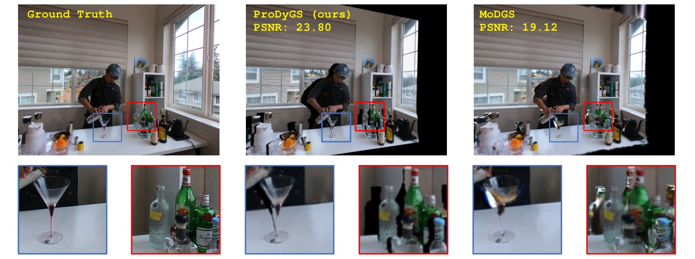
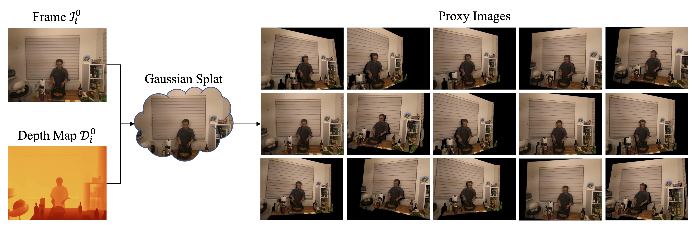
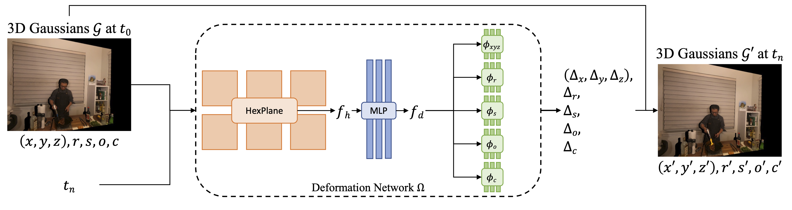
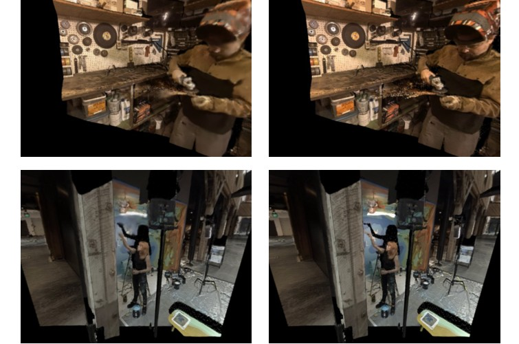
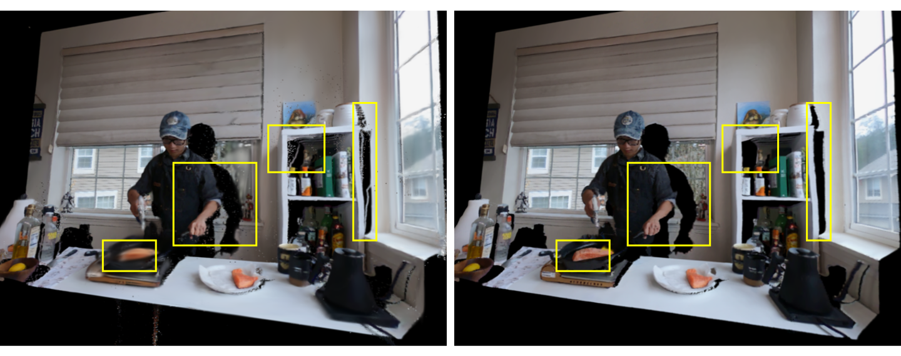

ProDyGS in action. Our framework enables accurate 4D novel view synthesis from a single static camera, restoring detail that competing methods (e.g., MoDGS) lose in dynamic regions.
We present ProDyGS, a novel dynamic 3D Gaussian Splatting framework for high-quality novel view synthesis from videos captured by a single static camera. While existing methods rely on multi-view setups or significant camera motion for geometric constraints, our approach addresses the challenging scenario where multi-view supervision is completely absent. We overcome this limitation by generating synthetic multi-view supervision through depth-guided proxy image synthesis. Specifically, we estimate temporally consistent depth maps using foundational monocular depth networks, then construct 3D Gaussian representations that generate proxy images from arbitrary viewpoints. A deformation network learns temporal dynamics by warping canonical Gaussians using this augmented supervision. Experiments on the DyNeRF dataset demonstrate that our method achieves state-of-the-art performance while requiring only monocular depth estimation as external supervision, outperforming approaches that rely on stronger priors such as scene flow.
Given a monocular video collected by a single static camera, ProDyGS first estimates a temporally consistent depth map for every frame with Depth Pro, refined for accuracy and sharpness via Neural Disparity Refinement, and stabilized over time through a scale-and-shift fit computed on static background regions only — mitigating the frame-wise scale drift that typically plagues monocular depth estimators.
These depth maps are then used to seed a lightweight, per-frame 3D Gaussian Splatting model, which is rendered from a set of viewpoints sampled around the real camera in a frontal hemisphere. The resulting proxy images act as pseudo multi-view supervision — restoring the geometric constraints that are otherwise completely absent in a static-camera capture.

Proxy image generation. For each frame, a lightweight 3DGS model initialized from the frame and its depth map is rendered from M viewpoints around the real camera, producing proxy image-depth pairs used as pseudo multi-view supervision.
Real and proxy views are then used equivalently to supervise a dynamic 3D Gaussian Splatting model: a set of canonical Gaussians is warped at every timestamp by a deformation network built on a multi-resolution HexPlane encoder and a multi-head MLP decoder, which predicts per-Gaussian updates of position, scale, rotation, opacity, and color.

ProDyGS framework. The deformation network Ω combines a HexPlane spatio-temporal encoder with a multi-head decoder that predicts per-Gaussian updates, warping the canonical Gaussians G into the deformed Gaussians G' at every timestamp.
We evaluate ProDyGS on the DyNeRF dataset following the MoDGS protocol: camera 0 is the only real input view, while cameras 5 and 6 are held out for evaluation. ProDyGS consistently outperforms every competing method — including approaches that rely on stronger priors such as scene flow — on every scene and across all metrics, with a mean improvement of 4 dB PSNR over the second-best method, MoDGS.
| Method | PSNR (dB) ↑ | SSIM ↑ | LPIPS ↓ |
|---|---|---|---|
| HexPlane | 15.33 | 0.559 | 0.451 |
| SC-GS | 18.77 | 0.736 | 0.231 |
| Deformable GS | 19.55 | 0.745 | 0.217 |
| MoDGS | 22.64 | 0.804 | 0.155 |
| ProDyGS (ours) | 26.64 | 0.881 | 0.111 |
| Method | cut_roasted_beef | sear_steak | coffee_martini | cook_spinach | flame_salmon_1 | flame_steak |
|---|---|---|---|---|---|---|
| MoDGS | 23.98 | 23.53 | 21.37 | 22.40 | 21.33 | 23.23 |
| ProDyGS (ours) | 27.55 | 29.57 | 22.73 | 27.80 | 23.20 | 26.31 |
To assess generalization beyond DyNeRF, we further test ProDyGS on sequences from the Light Field Video dataset, which differs substantially in camera configuration, scene layout, and capture setup.

Qualitative results on the Light Field Video dataset. Each pair compares a frame rendered by ProDyGS (left) with the corresponding ground-truth image (right).
More proxy views consistently improve rendering quality up to M = 18 views, with the largest gain occurring between 2 and 4 views. Depth refinement provides a smaller but consistent gain, primarily by sharpening depth discontinuities near object boundaries.
| Variant | PSNR (dB) ↑ | SSIM ↑ | LPIPS ↓ |
|---|---|---|---|
| M = 2 proxy views | 23.77 | 0.828 | 0.192 |
| M = 4 proxy views | 26.08 | 0.878 | 0.117 |
| M = 8 proxy views | 26.15 | 0.879 | 0.114 |
| M = 18 proxy views | 26.64 | 0.881 | 0.111 |
| w/o depth refinement | 26.58 | 0.876 | 0.117 |
| w/ depth refinement | 26.64 | 0.881 | 0.111 |

Depth refinement. Comparison on flame_salmon_1 without (top) and with (bottom) depth refinement — refinement yields cleaner discontinuities and higher-frequency detail (yellow boxes).
@inproceedings{cavalcanti2026prodygs,
title = {{ProDyGS}: Dynamic Gaussian Splatting from a Single Static Monocular Camera},
author = {Cavalcanti, Ugo Leone and Tosi, Fabio and Poggi, Matteo and Conti, Andrea and
Zlokolica, Vladimir and Cambareri, Valerio and Mattoccia, Stefano},
booktitle = {IEEE/RSJ International Conference on Intelligent Robots and Systems (IROS)},
year = {2026}
}